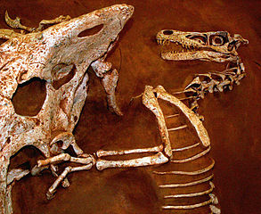

| シャムス教授の考古学入門 SECTION 1 (知は力なり！シリーズ) | |
| 三宅 美穂 | |
| etwas Neues (2016) | |
シャムス教授の考古学入門 SECTION 1
考古学とはどんな学問か

Vivat academia! vivat professores!
vivat membrum quodlibet!
vivant membra quaelibet!
semper sint in flore!
アカデーミア万歳！教授達万歳！
どの学生も万歳！
すべての友人も万歳！
彼らみな常に華の中にあれ！
考古学の世界へようこそ
過去に想いを馳せ、過去と対話する考古学。だれもが一度はなってみたいと思うあこがれの職業のひとつかもしれません。ただし、それは映画の中や物語の中でしか知らない職業でもあります。本書は実際に考古学に長年携わってきた方々による、考古学の魅力を伝える入門書です。
シリーズ「シャムス教授の考古学入門」はガイダンスと４冊（４セクション）からなります。各セクションを解説してくれるのはネコのシャムス教授です。シャムスとはアラビア語で太陽のこと。生まれながらに太陽のもとで発掘作業に携わる（！）教授の講義をお楽しみください。
講義を受講するのはタオくん。さっそく受講証を発行しましょう。
現在、本講義では学生募集中です。ペットの写真と一緒に、シャムス教授への「考古学」に関する質問をお待ちしています。これは！という質問は、シャムス教授の回答つきで次号に掲載されます。
質問と写真はこちらまで：etwasneuesbooks@gmail.com
- この本は横書きでレイアウトされています。
- また、ご覧になる環境により、表示の差が認められることがあります。
- 本作品では、ルビが（ ）内に表示されています。
SECTION 1
考古学の世界ー考古学とはどんな学問かー

はじめまして、皆さん。ぼくはシャムスといいます。これから皆さんと考古学とはどんな学問で、どんな研究がなされているのかを紹介していきたいと思います。今回の講義では、考古学の世界に皆さんを誘い、次回からはテーマに沿って、より詳しい内容に踏みこみながら、考古学が解き明かそうとする魅惑的な世界を一緒にたどっていこうと思います。
考古学とは
「考古学」と聞いて何を思い浮かべる？
皆さんからさまざまな声が上がりましたね。観光地に行けば、有名な遺跡を訪れたり、博物館に行って発掘された土器などを見たことのある方は多いのではないでしょうか。あるいは、近所で発掘作業をやっているのを見たことがあるけれど、何をしていたのかはよく分からない、なんていう人もいるかもしれません。縄文時代、弥生時代、「ああ、昔、学校で習ったなあ」と何となく覚えている方もいるでしょう。もしくは、ぼくの講義に関心があって聞きに来てくださった皆さんなら、もっと専門的な知識をお持ちの方もいるかもしれません。
先ほど上げていただいたワードに関しましては、どうでしょう。
「考古学」＝古い時代？
いいえ、考古学には産業考古学や戦跡考古学などと呼ばれる分野もあり、必ずしも石器時代のような古い昔のことを研究するだけではないのです。というのも、考古学とは物質文化、つまり形ある「もの」を研究し、その「もの」を通して人びとの営みや歴史をひも解いていく学問だからです。
・・・はい？文字で書かれた資料があれば、何も「もの」なんか詳しく調べなくても歴史は分かるじゃないか！ですか？・・・
よい指摘です。もちろん、文字情報も重要な資料です。でも、どうでしょう、すべてのことが記録として残っているわけではありません。
当時の国がまとめた歴史書なら、さまざまなことが書かれているのでは？と思われるかもしれませんが、その時の政権が面子を保つために、都合のよいように史実をねじ曲げたり、誇張している可能性も考えられます。
それに庶民の生活についてどれほどの記載があるでしょうか。文字が登場する以前だけでなく、あらゆる事象は多角的な視点から研究されて初めて、その本質に迫ることができるのです。

１．考古学とは、形ある「もの」（物質文化）を研究し、その「もの」を通して人びとの営みや歴史をひも解く学問。
２．考古学では、あらゆる事象を多角的な視点から研究しなければならない。
専門家ってどんな人たち？その１
発掘 ― それは考古学に欠かすことのできないものですが、考古学のすべてではありません。考古学者と聞くと、発掘だけしているとのイメージをお持ちの方もいるかもしれません。そう、たしかに発掘には実際、長い時間と忍耐が必要とされます。大きな遺跡では何十年と世代を引き継ぎながら発掘調査がなされている場合もあります。
それを詳しく分析することで、
- 当時の建物や埋葬施設（遺構）がどのように造られていたのか
- 人びとが空間をどのように利用していたのか
などが分かるようになります。
発掘の対象は、個人がしゃがんで作業していたような場所から、家族の生活領域、さらに集落の範囲および活動領域、別の集団との交流領域などにまで及び、研究の対象も生活の基盤、環境、技術、社会、経済など多岐にわたります。
そしていちばん重要なのは、発掘によって得られた情報をもとにその意味を考えることで、他の遺跡の情報などと比較しながら、さらには別の学問領域から得られる成果なども取り入れながら、考古学の研究はなされていきます。最近では、特に、他の学問領域との協力が欠かせないものとなっていています。
- 植物学
- 動物学
- 地質学
- 形質人類学
- 空間を解析するコンピューター・サイエンス
他にもさまざまな分野の専門家が遺跡の発掘調査に参加することも今ではあたり前になっています。
以前にも「古い時代＋発掘」と聞いて

「恐竜の骨は出るのですか！」
との質問を受けたことはありますが・・・
残念ながら、恐竜の骨を研究するのは、考古学ではなく、古生物学になります。
考古学はあくまでも人間の営みを研究対象としていますので、人類がまだ誕生していない中生代は守備範囲に入りません。ときどき、考古学を志望する新入生の中に
「恐竜を研究したいんです！」
とはつらつとした笑顔で答えてくれる学生がいるのですが、どう答えたらいいものかいつも悩んでいます。
また、発掘の話題になると、必ずと言っていいほど、黄金は出たのかと聞かれます。確かに、金の価値は今でも高く、博物館の特別展などでも目玉となる展示物には黄金がよく登場します。
そして、金は自然銅の利用に多少遅れるものの、早い時期から利用された金属のひとつです。多くは、ビーズやピンといった小さなものでしたが、社会が大きくなり、支配体制が堅固なものになると、権威を象徴するものとして比較的大きな製品が製作されるようになり、権力者の墓などから発見されることがあります。
ぼくたち考古学者にとっては、「金」も「銅」も「土器」や「石器」も人びとの営みを解き明かす重要な手掛かりとして、同じように価値があるので
「（金は見つかってないけど）すばらしい石製の容器が出たんです！」
と興奮ぎみに説明してしまいますが、最初に金の出土について聞いてきた方には
「ああ、出てないのね」
と残念がられてしまいます。
遺跡から発掘されるもののなかには、とても脆（もろ）いものも多くあります。遺跡でものが見つかると、その発見された場所や詳細な位置、置かれた向きなど、写真や図面で詳しい記録を残し、その後に取り上げられます。土のなかに埋まっている場合には、細心の注意をもって、まずその姿を輪郭が分かるように露出させます。
その際です、皆さんが思い描くブラシの出番となります。
普段は金属のコテで土を取り除くところを、竹串や柔らかい素材のヘラなどを使いつつ、最後はブラシで遺物に傷がつかないよう、できるだけ原型をとどめるように出現させ、記録し、取り上げます。とても根気のいる作業ですが、こうした努力によって後におこなわれる遺物の研究をスムーズに進めることができるのです。
１．研究の対象は生活の基盤、環境、技術、社会、経済など多岐にわたる。
２．他の学問領域との協力が欠かせない。
３．恐竜の骨を研究するのは、考古学ではなく、古生物学。
４．「金」も「銅」も「土器」や「石器」も人びとの営みを解き明かす重要な手掛かり。
専門家ってどんな人たち？その２
皆さんも、インディー・ジョーンズ博士にはあこがれたことでしょう。格好いい帽子をかぶり、遺跡から出土する宝物を奪おうとする悪漢と戦い、遺物の謎を解き、大活躍をします。彼は古代文字も読めました。
当然といいましょうか、残念ながらといいましょうか、現実の考古学者はもっと地味な人たちです。確かに、似たような帽子をかぶり、格好いい考古学者もたまに見ることはあります。小さな皮のかばんからリンゴを出して、ほおばる姿はなかなか絵になっていました。ただ、ふだんは作業ズボンにラフなシャツをきて、当然、土ぼこりにまみれて、みんな地道に作業をしてます。
遺跡を盗掘する輩（やから）は確かに存在します。各国政府や国際機関がさまざまな対策を行っていますが、一方で骨董品として文化財に対する需要があるかぎり、根絶するのは難しいのも事実です。
発掘調査が進行中の遺跡では（終了した遺跡でも）、遺跡範囲に柵が設置されたり、仮に盗まれそうな、それこそ金製品など話題になりそうな遺物が発見された際には、現場に放置せず、記録を急ぎ、早めに取り上げ、資料室や博物館で保管しますので、映画のような大活劇はまずありえません。
考古学者には、それぞれ各自の専門があり、地域、時代、研究対象が異なりますが、必要に応じて、当然、古代の文字を読む能力が求められる場合もあります。
たとえば、ぼくの知り合いで、西アジアにおけるビザンツ時代の宗教施設を研究をしている考古学者は、大学院生のときから、当時の指導教授に「ギリシア語は当然、古代ギリシア語が読めないと話にならん」と忠告され、考古学の勉強をそっちのけで、必死に古代ギリシア語を学んでいました。
ときには、エジプトのヒエログリフや、メソポタミアの楔形（くさびがた）文字が読めることを求められる場合もあるでしょう。ちなみに、ぼくの場合は、幸いなことに、興味が文字が出てくるよりも前の時代にあったために、このような修行をせずにすみましたが・・・。
エジプトといえば、ツタンカーメンという王の名はあまりにも有名ですね。彼の墓も、イギリスの考古学者によって発掘で発見されました。盗掘されていなかったために、黄金の製品も数多く発見され、世界的に有名になりました。当然、それだけの価値ある研究資料であり、すばらしい美術品でもあります。
ええっ？博物館の特別展で遺物をご覧になった！そうですね、日本でもエジプトの遺物は展覧会でよく紹介されますから、ご覧になられた方が他にもいらっしゃることでしょう。また、エジプトの墓では、壁画がよく保存されているため、文字の解読とともにその壁画を研究をする図像学者も多く存在します。ここにも、考古学者、言語学者、図像学者など多様な研究者がタッグを組み、全体像を把握すべく発掘調査と研究が行われています。
日本では、残念なことに、かつて旧石器捏造問題で、石器時代の遺物、遺跡が注目を浴びてしまいました。しかし、縄文土器をご覧になった方の中には、縄文時代の遺物に見られる独特の文様や形状、さらに器の形の独創性に感心した方もいらっしゃることでしょう。世界的に見ても、その古さでは１、２を争う縄文土器です。一万年以上にわたる縄文時代、どんな時代だったのでしょう。
日本国内の多くの地域で、それぞれ特徴的な縄文土器が存在し、地域間でお互いに影響を与え合いながら発展していきました。近年では、相当大規模な縄文集落も発見され、縄文時代のイメージも次々と塗り替えられています。
遺跡の保存や歴史教育、観光資源として、現地に行くと、縄文時代の竪穴式住居、弥生時代の倉庫や櫓（やぐら）、古墳時代の古墳や石室など当時を想像させるような野外展示を目にすることができるようになりました。
奈良県では、邪馬台国に関連する記述に沿うような、卑弥呼の居住地と思われるような遺跡も発掘され、邪馬台国はどこか、と長年話題にしていた人びとの関心を集めました。
先ほども申しましたように、考古学は、ものを研究し、人びとの営みを多角的にアプローチしていく学問であり、その手段として、土の中に眠る遺跡と長い時間をかけて対話し、できるだけ多くの情報を得るべく、分野の異なる多方面の研究者と協力しながら、その課題に向き合っています。
しかし、どれだけ注意を払っても、発掘作業自体は、同時に遺跡を破壊しながら行うものであり、土の中に眠る情報の中には、当然、取り上げられないものもあるはずだということを考えると、責任の重さを痛感します。
１．遺跡の管理には各国政府や国際機関がさまざまな対策を行っている。
２．専門により地域、時代、研究対象が異なるが、古代の文字を読む能力の必要な考古学者もいる。
３．考古学は他分野の研究者たちと協力しながら、遺跡からできるだけ多くの情報を得ることが大切。
発掘とは
発掘は時間との闘い？
では、考古学研究の重要な要素である発掘について見ていきましょう。発掘は、動機において、大きく２つに分けられます。道路や建造物建設などに伴う緊急発掘と、初めから学問的課題の解明を目的とした学術調査です。
- 緊急発掘
- 学術調査
現代の日本で圧倒的に多いのは緊急発掘です。景気の減速とともに、最近でこそその数は減少したものの、このような発掘では、調査は時間との勝負となります。保存する価値が高いと判断される場合は稀（まれ）ですが、そうした場合には建設が中止になり、三内丸山遺跡や吉野ケ里遺跡のように保存されることもあります。
ただ、ほとんどの場合では、短期間の調査の後に予定通り建設が行われ、実質的に遺跡破壊へと進みます。法整備が進み、建設前に調査が義務づけされただけ、良しとしなければならないのかもしれません。しかし、前項でもお話ししたように、発掘ではいくら注意しても失われてしまう情報があることを思うと残念でなりません。
理想的には、発掘には十分な時間をかけたいものですが、手作業の多い調査では、人件費もばかにできません。出土した資料の科学分析をするには、さらに時間と費用がかかります。発掘は金食い虫なのです。発掘で出土した遺物の保管場所も確保しなければなりません。土器の破片やその復元した土器が、保管にどれほどの容量を必要とするかはおそらく皆さんの想像以上です。もちろん、土器の他にも大きな石臼（いしうす）や文様や文字の刻まれた石碑などが多く出土する場合もよくありますから、課題はつきません。
こうした発掘費用の多くは、もちろん税金ですので、経済重視であり、超赤字財政国家であり、少子高齢化社会を抱える日本にとって、文化の保存研究は、どれほどの割合を当てる覚悟ある重要課題になりえるのでしょうか？えっ、保育や学校教育、介護の方が重要だとのご意見ですね、そうです、これは、わたしたち国民ひとりひとりが決定を下す問題でもあります。
緊急発掘の場合は、その発掘担当者が行政もしくは行政から委託された組織が行うことが多いのですが、学術調査の場合は、それに加え大学や博物館などの研究機関もしくはそこに所属する研究者が、特定の調査課題を探究すべく調査に挑みます。その目的を達成するために、資金を提供してくれる組織に依頼申請をしたり、関心をもっている各分野の研究者に参加の協力を依頼したりします。
そして、資金や人員の目処（めど）がつき、調査計画が確定し、発掘許可がそろえば、調査開始となります。もちろん、これらの研究者にも日常業務もありますから、場合によっては、大学であれば長期夏季休暇時期（夏休みですね）に集中的に発掘が行われたりするので、規模にもよりますが、ひとつの遺跡に数年から十数年、または数十年は費やさねばなりません。
１．発掘には動機において、緊急発掘と学術調査がある。
２．緊急発掘の調査は時間との勝負。保存されることは稀である。
３．発掘費用の大半は税金でまかなわれているので、わたしたち国民の問題でもある。
４．学術調査の場合は、行政のほかに、大学・博物館・その他の組織に調査協力を求め、資金と人員を確保する。
現場は熱い（暑い）
はじめにお話ししたように、考古学は時代もさまざまですから（同じ時代においても）、当然、遺跡もさまざまな種類があります。それに応じて、調査の方法も変わってきます。ただし
- 遺跡、遺構を計測
- 記録
- 遺物を出土状態が分かるように記録
- 以上の項目の終了後、取り上げ、保管する
この手順はほぼ同様です。
もっとも手間のかかる発掘調査は、水中考古学かもしれません。難破船や古代の港跡など海底において、地上と似たような手順で調査を進めていきますが、もちろん、潜水道具や特化した道具類が必要な上、長時間海中にいられないという条件もあります。どれほどの時間と根気が必要なのか、気が遠くなるほどです。ぼくのように、西アジアで炎天下４０度近いなかで調査するといっても、まだマシなのだと思います。
遺跡の種類が多岐にわたるので、ここではぼくが行う発掘を例として、模式的な発掘手順を簡単にお話しします。
西アジアでは遺跡が丘状になっていることが珍しくありませんが、それは半乾燥地域では居住に適した場所が限られているため、断続的に、またあるときは異なる集団によって、同じ場所に集落が営まれることになるからです。

基本的には日干しレンガの家が壊れると、その上に新たな家が築かれることの繰り返しによるものなのですが、最終的に小山のように盛り上がるというわけです。ときには、その上部に現在の村があり、今も人びとが暮らしている光景を見ることができます。実際、そうした場所の、民家に挟まれた空き地を発掘調査したことがあります。

質問ありがとうございます、いえ、「朝ごはん」です。というのも、調査に出かけられるのは大学が夏休みのときに限られるため、当然現地も夏の盛りということになります。幸い湿度は低いため日かげはそこそこ快適なのですが、昼は何度でしょうか、テレビの天気予報では毎日最高気温４０度という数字が並びますが、作業を行う日なたの場所では確実にそれよりも暑く、温度計は恐ろしい値を示します。とくに暑い日には、車での移動もエアコンなしでも窓を閉めなければ、熱風で耐えられません。
そんな状況ですから、発掘は、朝、日の出前に宿舎から小型バスで出発し（そのときは遺跡まで２０分くらいかかりました）、日の出とともに発掘を始め、昼すぎに終了します。その後宿舎に帰り、ようやく「昼ごはん」となります。

その間、寒い朝から始まり、じりじりと温度が上がるにつれて、一枚一枚と上着を脱ぎ、８時過ぎには暑さが増すなか朝食をとり、その後、休憩時に甘いお茶を飲んでどうにか暑さに耐えながら、午後１時頃に撤収する、というスケジュールです。宿舎では、昼食、シャワー、仮眠ののち、遺物整理を行い、夕食、就寝となります。
１．調査の手順は、①遺跡、遺構を計測し記録、②遺物を出土状態が分かるように記録、③以上の項目の終了後、取り上げ、保管する。
２．水中考古学は以上の手順を海中で行うためにもっと手間がかかる。
３．西アジアの遺跡では、幾世代にもわたって集落が築かれていく場所が丘状になっていることが珍しくない。
発掘ABC

１．出土品には土器、石器のほかにも、装身具、人骨、炭化した植物の種や、顔料なども収集され、その時代の人びとの生活が分かる。
２．遺物は整理して保管されたあと、地元の博物館に収蔵されるが、持ち帰って研究を続けるものもある。
３．地元の人たちの協力・地元学生への貢献があってこそ、発掘作業は成立する。
著者紹介
- インディ File:Hollywood_Studios_-_Indy_and_the_idol_-_by_hyku.jpg 13:05, 15 August 2016(UTC) License=CC BY-SA 2.0
- エジプト宝物１ File:Canopic_Coffinette_(Tutankhamun).jpg 13:07, 15 August 2016(UTC) License=CC BY-SA 2.0
- エジプト宝物２ File:Head_of_a_Leopard_(Tutankhamun).jpg 13:07, 15 August 2016(UTC) License=CC BY-SA 2.0
- エジプト宝物３ File:Bijou_de_la_tombe_de_Toutânkhamon_(musée_du_Caire_Egypte)_(1815592396).jpg 13:08, 15 August 2016 2016(UTC) License=CC BY-SA 2.0
IFについて

Copyright© 三宅 美穂 2016年
- この図書は、デジタル配信用です。
- 本作品の内容あるいはデータを、全部・一部にかかわらず、無断で複製、転載、改ざん、改変、公衆送信（インターネット上への掲載を含む）することは、法律で禁止されています。また、個人的な使用を目的とする複製であっても、コピーガードなどの著作権保護技術を解除して行うことはできません。
Etwas Neues Booksのお知らせ


知は力なり！ シャムス教授の＜考古学入門＞シリーズ
カッツェン大学のシャムス教授がお贈りする「考古学」の魅力120％の入門書
楽しい質問やペットの写真を送ってくださった読者には、毎セクション１名にシャムス教授よりトートバッグのプレゼント！


＜以下、順次発刊予定です！お見逃しなく！＞
知は力なり！ ベンツ教授の＜英語で読む短編小説＞シリーズ


知は力なり！ ルーカス教授の＜エル・システマ入門＞シリーズ